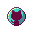
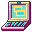
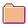
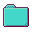

(\ _ /)
( ' x ')
c(")(")
/\____/\
(=^ ^=)
(") (")_J

jade.exe
terminal
creativity spotlight
prompt refinerA community Discord bot helping aspiring artists, writers, and creatives share their work. Led development as team lead.
TECH STACKSpring · React · Python · PostgreSQL · AWS EC2 · Docker · GitHub Actions
REPO > github linkA Java GUI interface to display binary generalized Delannoy carpets with analysis tools using Zeilberger and Gosper algorithms.
TECH STACKPython · Java · Java GUI
REPO > github linkA desktop app for optimizing the prompts you send to AI models.
TECH STACKFlask · React · SQLite
REPO > github link